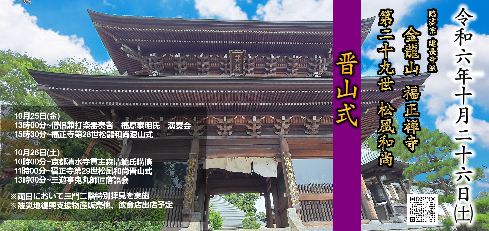

メニュー

【詳細】
10月25日(金)
13時00分～僧侶兼打楽器奏者 福原泰明氏 演奏会
15時30分～福正寺第28世松龍和尚退山式
10月26日(土)
10時00分～京都清水寺貫主森清範氏講演
11時00分～福正寺第29世松風和尚晋山式
13時00分～三遊亭鬼丸師匠落語会
※両日において三門二階特別拝見を実施
※被災地復興支援物産販売他、飲食店出店予定
～お車でご来山の方～
当日は大変混雑が予想されます。 福正寺駐車場の台数には限りがございますので、 公共交通機関のご利用、 近隣の檀家様には徒歩でのご来山のご協力をお願い致します。 又、 箱根ヶ崎圓福寺様の駐車場もお借りしております。 圓福寺様より送迎車にてピストン移送もしておりますのでお 早めに来て有効活用して頂けると幸いに存じます。
リンク
清水寺
URL:
https://www.kiyomizudera.or.jp/
三遊亭鬼丸師匠公式
URL:
https://www.rakugo-kyokai.jp/members/gb2lupckw81
三遊亭鬼丸師匠
URL:
http://s-onimaru.jp/
URL:
https://x.com/onimaru31?t=Xeq0o8TCbOpxDdVzmrE0qA&s=09
僧侶兼打楽器奏者 福原泰明氏
URL:
https://x.com/yasu_f18?t=NefGCEYVXsbeQg3dJy5EOA&s=09
URL:
https://yasuakifukuhara.com/
京都 安田念珠店
URL:
https://ssl.yasuda-nenju.com/
香老舗 松栄堂
URL:
https://www.shoyeido.co.jp/